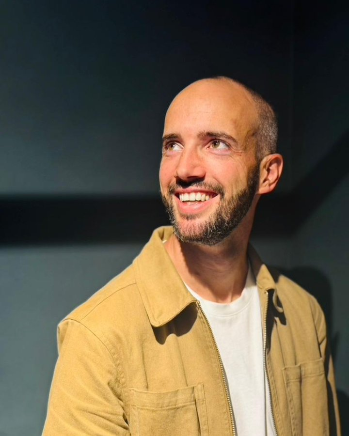
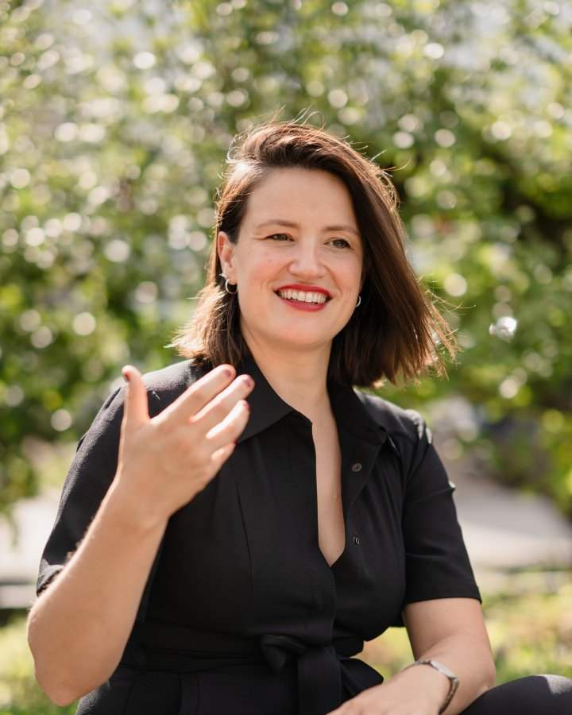
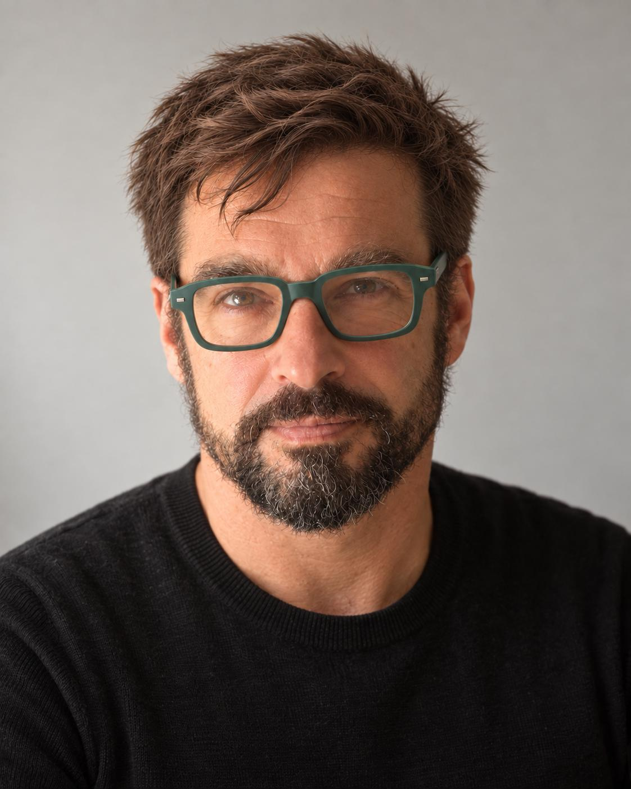
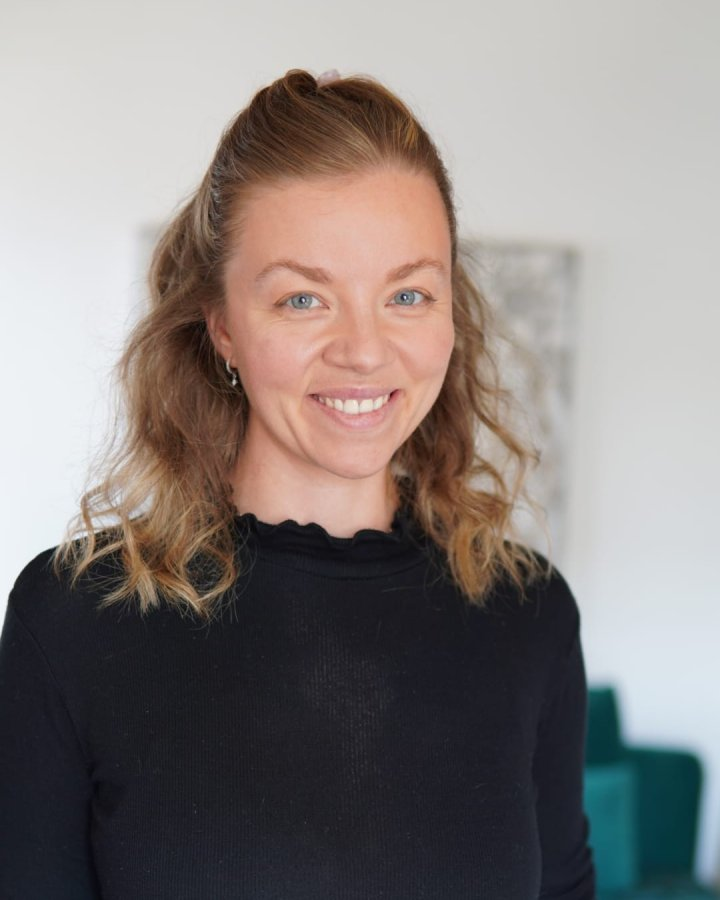
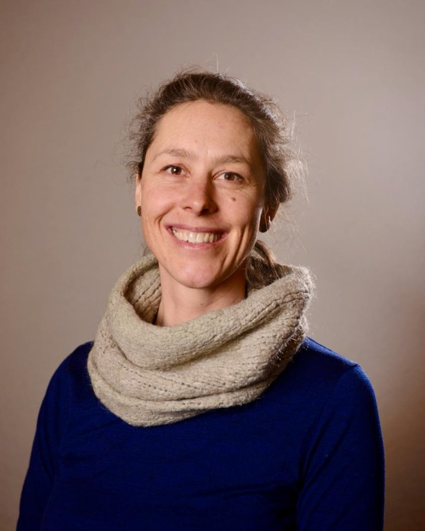

Président du comité
Grégoire Chèvre
Le reste du temps : il gère et développe des projets immobiliers. Ingénieur horloger de formation et passionné par l'innovation, il suit de près ces deux domaines.
01 Le comité d'organisation
Le comité est bénévole et animé par une seule envie : faire circuler les idées qui font bouger les lignes, donner une scène aux talents d'ici et d'ailleurs, et créer un moment de rencontre.

Président du comité
Le reste du temps : il gère et développe des projets immobiliers. Ingénieur horloger de formation et passionné par l'innovation, il suit de près ces deux domaines.

Coach des speakers
Le reste du temps : elle forme des avocats stagiaires à la plaidoirie et des particuliers à la prise de parole en public. Ancienne avocate, elle dispense également des cours de droit à l'Université de Fribourg.
Responsable workshops et sponsors
Le reste du temps : elle accompagne les organisations dans le développement de projets innovants et collaboratifs. Son objectif : que l'intelligence collective leur donne les clés pour relever les défis d'un monde fluctuant !

Production et technique
Le reste du temps : il relie créativité, pédagogie et arts visuels. Enseignant spécialisé, artiste et designer lumière, il explore comment l'écoute et les processus créatifs peuvent transformer les individus et les projets.

Marketing
Le reste du temps : elle accompagne les entreprises et institutions de la région à développer une offre ou un marché, dans une démarche empathique et centrée sur l'humain.

Event Manager
Le reste du temps : elle est spécialiste en logistique d'événements internationaux et en gestion des opérations sur site. Elle s'engage également dans le sport handicap, notamment en montagne.